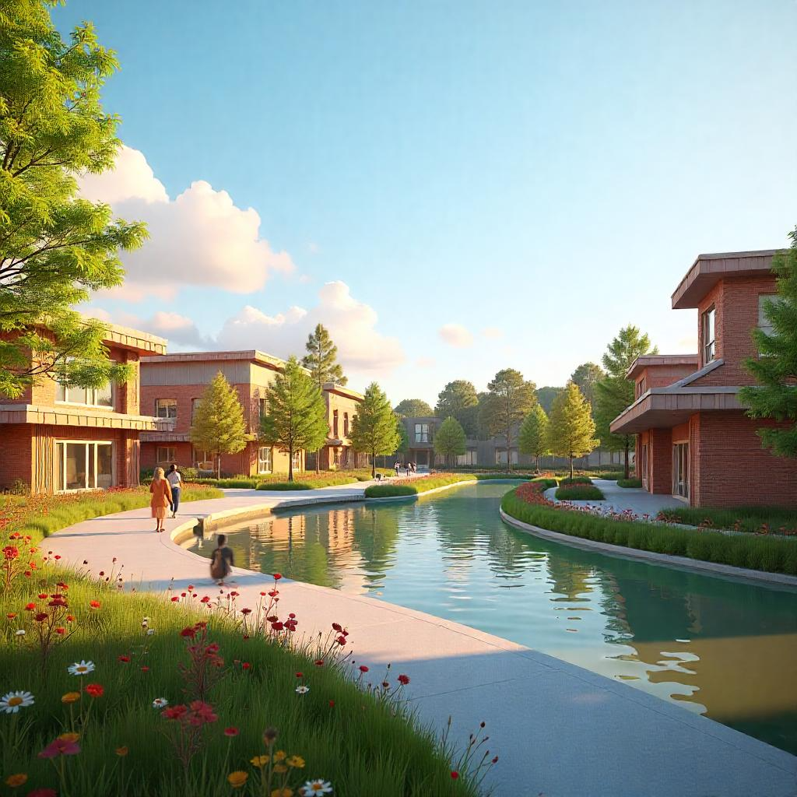
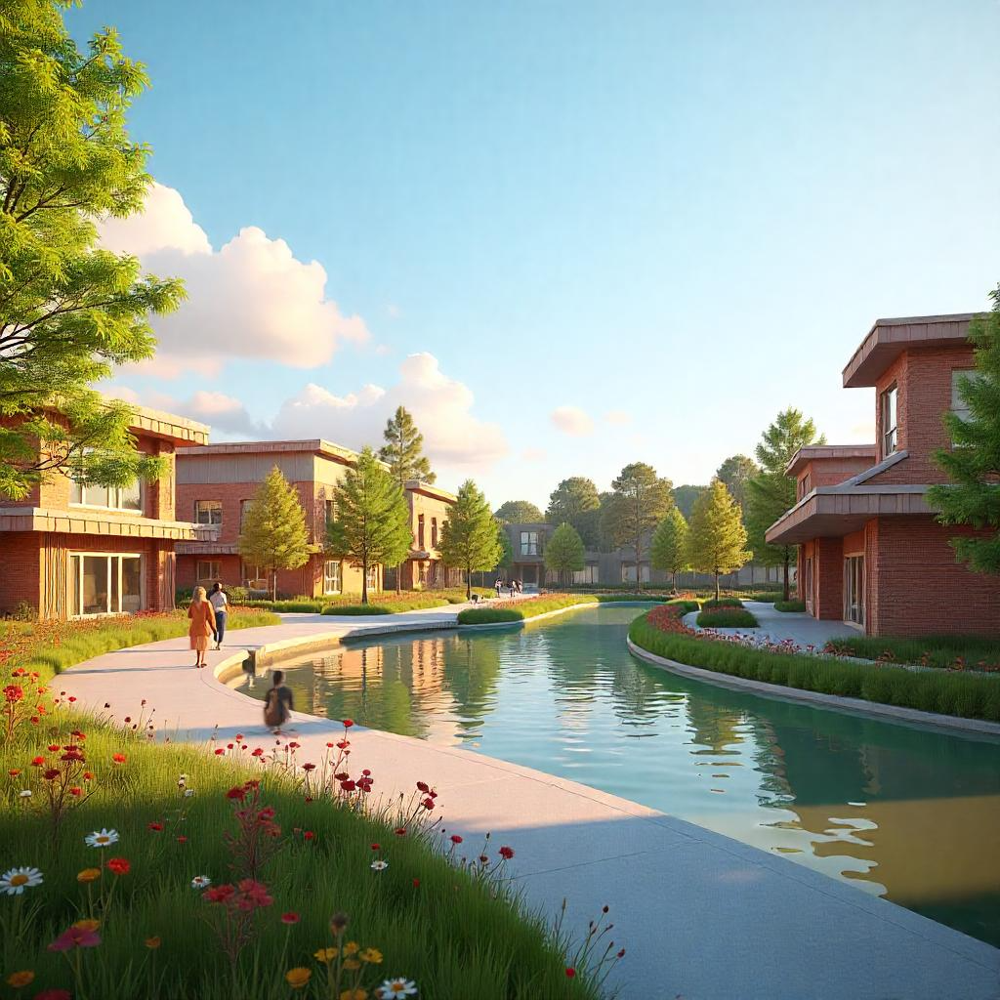

Explore
Explore Naawi Oodena and experience the connection between where people live, work, and gather. Walk through the residential areas, where thoughtfully designed homes support a strong sense of community and reflect Indigenous values of family and belonging. Visit the commercial spaces, where local businesses, services, and workplaces help grow a self-sustaining economy rooted in opportunity. Then step into the heart of the site, the Mixed Use Village, where culture, commerce, and everyday life come together in a vibrant, welcoming environment. Each space offers something unique, and together they form a complete community that invites everyone to learn, share, and grow.
Residential
This zone mostly has single-family homes with yards and more space. It’s quieter and offers more privacy, which suits families and those who want a traditional neighborhood. These homes connect well to parks and community spaces nearby, supporting Indigenous families in creating strong, rooted communities.
Village
This area brings together homes, shops, offices, and community spaces in one place. It’s designed to be walkable and lively, with shops and services on the ground floor and homes or offices above. This helps create a friendly neighborhood where people can live, work, and connect easily. It also supports easy access to public transit. For Indigenous communities, this space offers opportunities for economic growth, cultural expression, and community gathering within a shared urban environment.

 
